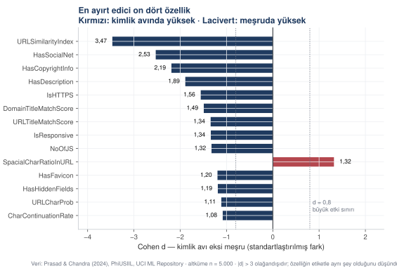
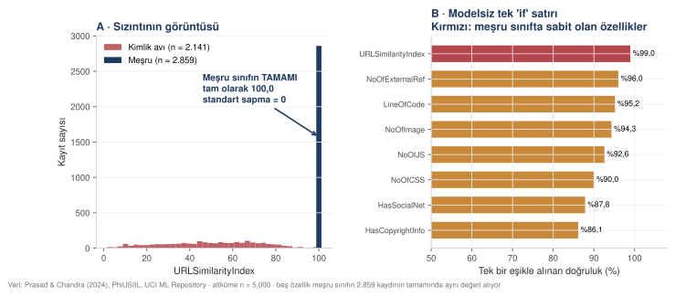
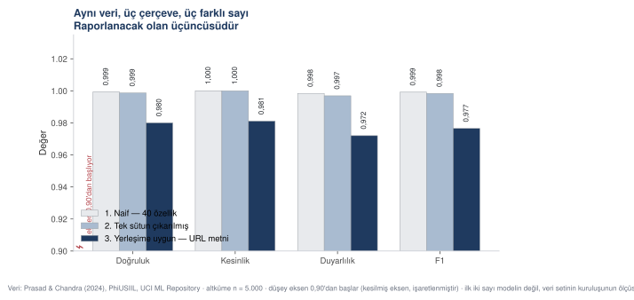
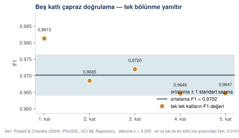
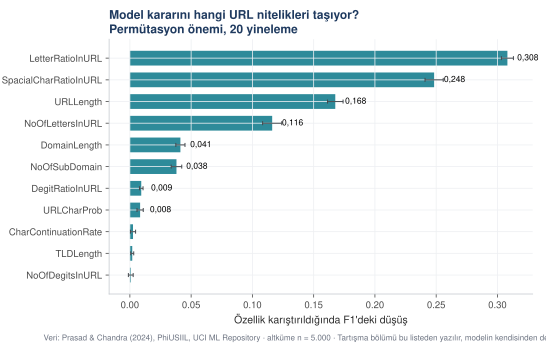

Makine öğrenmesi ve veri sızıntısı
Kamuya açık bir kimlik avı veri seti üzerinde tam bir sınıflandırma hattı ve olağandışı yüksek doğruluk değerlerinin yorumlanması.
Bu bölüm bir makine öğrenmesi hattını baştan sona kuruyor. Model olağanüstü bir sonuç veriyor; bölümün geri kalanı bu sonucun nedenini arıyor ve dürüst sayıyı yeniden hesaplıyor.
Anlatının sonucu tek cümleyle şudur: yüksek doğruluk bir başarı belgesi değil, bir denetim gerekçesidir.
Bölümün dört adımının altında — naif model, sızıntı taraması, çerçeveyi değiştirme ve model yorumlama — o adımı üreten istem var. Aşağıdaki sayıların tamamı bu istemlerle üretildi; istemlerin doldurulmuş hâlleri, bu kursta gerçekten koşturulan metinlerin kendisidir.
profile empowered phishing URL detection framework based on similarity index and incremental learning. Computers & Security, 136, 103545. Veri seti: UCI Machine Learning Repository." doi="10.1016/j.cose.2023.103545" lisans="CC BY 4.0" boyut="Tam set 235.795 kayıt · kursta 5.000 satırlık katmanlı altküme · 40 sayısal özellik" dosya="veri/web_guvenligi/phishing_ornek_5000.csv, kod/06_analiz_web_guvenligi.py, cikti/web_guvenligi_analiz.txt" Altkümede 2.141 kimlik avı (%42,8) ve 2.859 meşru (%57,2) kayıt var; oran tam veri setindekiyle aynıdır. Özellikler iki aileden gelir: URL dizgisinden hesaplananlar ve sayfa içeriğinden çıkarılanlar. Bu ayrım bölümün dönüm noktası olacak.
Adım 1 — Modelden önce veriye bakmak
| Özellik | Kimlik avı ort. | Meşru ort. | Cohen d |
|---|---|---|---|
| URLSimilarityIndex | 49,537 | 100,000 | −3,466 |
| HasSocialNet | 0,005 | 0,791 | −2,529 |
| HasCopyrightInfo | 0,061 | 0,803 | −2,190 |
| HasDescription | 0,051 | 0,737 | −1,890 |
| IsHTTPS | 0,490 | 1,000 | −1,557 |
| DomainTitleMatchScore | 16,490 | 76,084 | −1,491 |



Adım 2 — Bir yan bulgu: HTTPS
| HTTPS | Kimlik avı | Meşru |
|---|---|---|
| Yok (0) | 1.091 | 0 |
| Var (1) | 1.050 | 2.859 |
khi-kare(1) = 1.860,50 · p < 0,001 · Cramér V = 0,610 (güçlü ilişki)
HTTPS kullanan sitelerin %26,9'u kimlik avı.
Adım 3 — Naif model
Standart yol şudur: bütün sayısal özellikleri modele ver, veriyi eğitim ve test olarak böl, eğit, ölç. Kullanılan model rastgele ormandır: veriyi farklı altkümeler üzerinde eğitilmiş çok sayıda karar ağacına veren ve ağaçların kararlarını oylayarak birleştiren bir yöntem. Tek bir ağacın kararsızlığını azalttığı için tablo biçimli veride ilk denenen seçeneklerden biridir. Bölme katmanlıdır; yani kimlik avı ve meşru kayıtların oranı eğitim ile test kümelerinde veri setindeki oranla aynı tutulur, böylece test kümesi şans eseri dengesiz düşmez.
doğruluk : 0,9993 kesinlik : 1,0000 duyarlılık : 0,9984 F1 : 0,9992 ROC AUC : 1,0000 PR AUC : 1,0000 Karışıklık matrisi doğru negatif 858 yanlış pozitif 0 yanlış negatif 1 doğru pozitif 641
ROL Makine öğrenmesi uygulayan bir araştırma asistanısın. Çıktıların bir dergi makalesinin Bulgular bölümüne girecek. KAYNAK [veri dosyası] — [n] satır, [k] sütun. Sonuç değişkeni: [sütun adı], [kaç sınıf], sınıf dağılımı [oran]. GÖREV İkili sınıflandırma hattı kur ve başarıyı ölç. ADIMLAR 1. Veriyi eğitim ve test olarak ayır. Bölme KATMANLI olsun: iki sınıfın oranı her iki kümede veri setindekiyle aynı kalsın. 2. [model adı] ile eğit. 3. Test kümesinde şu ölçütleri hesapla: doğruluk, kesinlik, duyarlılık, F1, ROC AUC, PR AUC. 4. Karışıklık matrisini dört hücresiyle bas. ZORUNLU — Pozitif sınıfın hangisi olduğunu baştan yaz ve çıktıda belirt. Kesinlik ve duyarlılık bu seçime göre anlam değiştirir. — Rastgelelik içeren her yerde sabit tohum kullan: [tohum]. — Her ölçütün ne ölçtüğünü kodun yorum satırında açıkla. — Değişken ve fonksiyon adları Türkçe olsun. SINIRLAR — Hiperparametre araması yapma. Bu ilk ölçüm; varsayılan ayarlarla nerede olduğumuzu görmek istiyorum. — Özellik seçimi yapma. Bütün sayısal sütunları ver. — Sonucu yorumlama. Sayıları bas, yorumu bana bırak. — Başarı yüksek çıkarsa bunu olumlu okuma; yalnız raporla. DENETİM Eğitim ve test kümelerindeki sınıf oranlarını ayrı ayrı bas. İkisi veri setindeki oranla aynı mı?
ROL Makine öğrenmesi uygulayan bir araştırma asistanısın. Çıktıların bir dergi makalesinin Bulgular bölümüne girecek. KAYNAK phishing_ornek_5000.csv — 5.000 satır, 43 sütun. Sonuç değişkeni: etiket, iki sınıf (kimlik_avi / mesru). Sınıf dağılımı: kimlik avı 2.141 (%42,8), meşru 2.859 (%57,2). Sayısal olmayan sütunlar: TLD, etiket. label sütunu etiketin sayısal kopyası; modele VERME, sızıntı olur. GÖREV İkili sınıflandırma hattı kur ve başarıyı ölç. ADIMLAR 1. Veriyi %70 eğitim, %30 test olarak ayır. Bölme KATMANLI olsun. 2. Rastgele orman ile eğit (300 ağaç). 3. Test kümesinde şu ölçütleri hesapla: doğruluk, kesinlik, duyarlılık, F1, ROC AUC, PR AUC. 4. Karışıklık matrisini dört hücresiyle bas. ZORUNLU — Pozitif sınıf = kimlik avı. Çıktıda bunu açıkça yaz. Bir güvenlik uygulamasında ilgilenilen sınıf tehdittir; kesinlik ve duyarlılık buna göre okunur. — Sabit tohum: 20261103. — Her ölçütün ne ölçtüğünü kodun yorum satırında açıkla. Özellikle kesinlik ile duyarlılık arasındaki farkı, bu probleme çevirerek yaz: yanlış pozitif meşru bir siteyi engellemek, yanlış negatif bir kimlik avı sayfasını geçirmektir. — Değişken ve fonksiyon adları Türkçe olsun. SINIRLAR — Hiperparametre araması yapma. — Özellik seçimi yapma. label dışındaki bütün sayısal sütunları ver. — Sonucu yorumlama. Sayıları bas, yorumu bana bırak. — Başarı yüksek çıkarsa bunu olumlu okuma; yalnız raporla. DENETİM Eğitim ve test kümelerindeki sınıf oranlarını ayrı ayrı bas. İkisi veri setindeki oranla aynı mı?
Adım 4 — Teşhis: sistematik tarama
Aranan şey veri sızıntısıdır: modele verilen bir özelliğin, ölçülmek istenen niteliği değil doğrudan cevabın kendisini taşıması. Sızıntı varsa model öğrenmez, yalnızca okur. Şüphe doğduğunda tek tek sütun denemek yerine bütün sütunlar iki ölçütle taranır.
| Özellik | Meşru sınıfta SS | Kimlik avında SS | Tek eşik doğruluğu |
|---|---|---|---|
| URLSimilarityIndex | 0,0000 | 22,2523 | %98,96 |
| IsHTTPS | 0,0000 | 0,5000 | %79,00 |
| NoOfQMarkInURL | 0,0000 | 0,3044 | %59,94 |
| IsDomainIP | 0,0000 | 0,0806 | %57,46 |
| HasObfuscation | 0,0000 | 0,0647 | %57,36 |
Beş özellik, meşru sınıftaki 2.859 kaydın tamamında aynı değeri alıyor. Bu bir ölçüm değil; veri setinin kuruluşundan gelen bir düzenliliktir.
| Özellik | Tek eşik doğruluğu | Hangi aileden |
|---|---|---|
| URLSimilarityIndex | %98,96 | arama/karşılaştırma |
| NoOfExternalRef | %96,00 | sayfa içeriği |
| LineOfCode | %95,18 | sayfa içeriği |
| NoOfImage | %94,32 | sayfa içeriği |
| NoOfJS | %92,58 | sayfa içeriği |
| NoOfCSS | %90,04 | sayfa içeriği |



ROL Veri sızıntısı denetimi yapan bir araştırma asistanısın. DURUM [model] ile [başarı değeri] elde ettim. Bu sayı alanım için olağandışı yüksek. Sızıntı olup olmadığını denetlemek istiyorum. GÖREV Bütün özellikleri iki ölçütle tara ve sonucu tablo olarak ver. ÖLÇÜT 1 — SINIF İÇİ SABİTLİK Her özellik için, her sınıf içindeki standart sapmayı hesapla. Bir sınıfta standart sapma sıfırsa, o özellik o sınıftaki bütün kayıtlarda aynı değeri alıyor demektir. Bu bir ölçüm değil, etiketin özelliğe sızmasıdır. ÖLÇÜT 2 — TEK EŞİK GÜCÜ Her özellik için, tek bir eşik değeriyle elde edilebilecek en yüksek doğruluğu hesapla. Eşikleri özelliğin nicelik değerlerinden üret, iki yönü de dene (eşiğin altı pozitif / üstü pozitif). ÇIKTI | Özellik | Sınıf A'da SS | Sınıf B'de SS | Bir sınıfta sabit mi | Tek eşik doğruluğu | Tabloyu tek eşik doğruluğuna göre azalan sırala. SONRA — Bir sınıfta tamamen sabit olan özellikleri ayrı listele. — Tek eşikle %90 üstü doğruluk veren özellikleri ayrı listele. — İkinci listedeki özellikler hangi aileden geliyor? (Ölçüm zamanına, veri kaynağına ya da hesaplanma biçimine göre grupla.) SINIRLAR — Hiçbir sütunu kendiliğinden silme. Taramayı yap, kararı bana bırak. — "Bu sızıntıdır" hükmü verme; ölçüyü ver, hangi özelliğin neden şüpheli olduğunu açıkla, kararı ben vereceğim. — Taramayı yalnız en önemli birkaç özellikte yapma; BÜTÜN sütunları tara. Sızıntı çoğu zaman beklemediğiniz sütundadır. DENETİM Kaç özellik tarandı? Kaçı bir sınıfta sabit? Kaçı tek eşikle %90 üstü veriyor? Üç sayıyı da bas.
ROL Veri sızıntısı denetimi yapan bir araştırma asistanısın. DURUM Rastgele orman ile test kümesinde %99,93 doğruluk ve 1,000 ROC AUC elde ettim. 1.500 kayıtlık test kümesinde tek bir yanlış pozitif yok. Kimlik avı saptaması açık bir problemdir ve bu düzey bir sonuç alanda olağandışıdır. Sızıntı olup olmadığını denetlemek istiyorum. İLK İŞARET Betimsel karşılaştırmada URLSimilarityIndex için Cohen d = −3,47 çıktı ve meşru sınıftaki ortalaması tam olarak 100,000. Yuvarlak bir sayıya tam oturan ortalama, o sınıfta dağılımın sabit olabileceğini düşündürüyor. GÖREV Bütün özellikleri iki ölçütle tara ve sonucu tablo olarak ver. ÖLÇÜT 1 — SINIF İÇİ SABİTLİK Her özellik için, her sınıf içindeki standart sapmayı hesapla. ÖLÇÜT 2 — TEK EŞİK GÜCÜ Her özellik için, tek bir eşik değeriyle elde edilebilecek en yüksek doğruluğu hesapla. Eşikleri 80 nicelik noktasından üret, iki yönü de dene. ÇIKTI | Özellik | Kimlik avında SS | Meşruda SS | Meşruda sabit mi | Tek eşik doğruluğu | Tabloyu tek eşik doğruluğuna göre azalan sırala. SONRA — Meşru sınıfta tamamen sabit olan özellikleri ayrı listele. — Tek eşikle %90 üstü doğruluk veren özellikleri ayrı listele. — İkinci listedeki özellikler hangi aileden geliyor? Burada iki aile var: URL dizgisinden hesaplananlar ve sayfa içeriğinden çıkarılanlar. Hangisi baskın? SINIRLAR — Hiçbir sütunu kendiliğinden silme. — "Bu sızıntıdır" hükmü verme; ölçüyü ver, kararı ben vereceğim. — Taramayı BÜTÜN sütunlarda yap, yalnız şüphelendiğim sütunda değil. İlk işaret URLSimilarityIndex'i gösteriyor ama başka sütunlar da aynı sorunu taşıyor olabilir. — Sayfa içeriği özelliklerinin yüksek çıkması tek başına sızıntı değildir; gerçek bir örüntü de olabilir. İkisini ayırt etmeye çalışma, ikisini de listele. DENETİM Kaç özellik tarandı? Kaçı meşru sınıfta sabit? Kaçı tek eşikle %90 üstü veriyor? Üç sayıyı da bas.
Adım 5 — Tek sütun çıkarmak yetmiyor
Sızıntı bulunduğunda ilk tepki o sütunu silmektir. Bu tepkinin yeterli olup olmadığı ölçülmelidir.
Naif model F1 : 0,9992 Tek sütun çıkarılmış : 0,9984 Değişim : −0,0008
Adım 6 — Çerçeveyi değiştirmek
Doğru soru şu değildir: "hangi sütunu silmeliyim?" Doğru soru şudur: "bu model gerçekte ne zaman karar verecek?"
Modelin gerçekte hangi bilgiyle ve hangi anda karar vereceğine yerleşim senaryosu diyoruz. Bir kimlik avı süzgecinin yerleşim senaryosu nettir: kullanıcı bağlantıya tıklamadan önce karar vermek zorundadır. Sayfa içeriği o anda elde yoktur — onu elde etmek için siteye bağlanmak, yani tam da engellenmek istenen şeyi yapmak gerekir. Dolayısıyla sayfa özellikleri kullanmak, yalnız istatistiksel değil yöntemsel bir hatadır: geleceği bilerek geçmişi tahmin etmeye benzer.
Kullanılan — 11 özellik
Yalnız URL dizgisinden hesaplananlar
URLLength · DomainLength · TLDLength · NoOfSubDomain ·
CharContinuationRate · URLCharProb · NoOfLettersInURL ·
LetterRatioInURL · NoOfDegitsInURL · DegitRatioInURL ·
SpacialCharRatioInURL
Dışarıda bırakılan
Üç gerekçeyle
Sızıntı: URLSimilarityIndex, IsHTTPS, IsDomainIP, HasObfuscation, NoOfQMarkInURL — meşru sınıfta sabit. Yerleşim senaryosuna aykırı: bütün sayfa içeriği özellikleri — ancak siteye bağlanınca elde edilir. Türetilmiş: TLDLegitimateProb — şüphelenildi, denetlendi, tek eşikle yalnız %66,9 doğruluk veriyor ve modele katkısı yok; sızıntı değil ama veri setinin kendi etiketinden türediği için dışarıda bırakıldı.
| Model | Özellik | Doğruluk | Kesinlik | Duyarlılık | F1 | ROC AUC |
|---|---|---|---|---|---|---|
| 1. Naif | 40 | 0,9993 | 1,0000 | 0,9984 | 0,9992 | 1,0000 |
| 2. Tek sütun çıkarılmış | 39 | 0,9987 | 1,0000 | 0,9969 | 0,9984 | 1,0000 |
| 3. Yerleşime uygun | 11 | 0,9800 | 0,9811 | 0,9720 | 0,9765 | 0,9955 |
Yerleşime uygun modelin karışıklık matrisi (1.500 kayıtlık test) doğru negatif 846 · yanlış pozitif 12 yanlış negatif 18 · doğru pozitif 624



ROL Makine öğrenmesi uygulayan bir araştırma asistanısın. DURUM Sızıntı taraması [n] özelliğin sorunlu olduğunu gösterdi. Ayrıca özelliklerin bir bölümü, modelin gerçek kullanımında elde OLMAYACAK bilgiden geliyor. YERLEŞİM SENARYOSU [Modelin gerçekte ne zaman ve hangi bilgiyle karar vereceğini yazın. Örnek: "karar, kullanıcı bağlantıya tıklamadan önce verilmeli; o anda yalnız URL dizgisi elde var."] GÖREV Yalnız yerleşim senaryosunda elde olacak özelliklerle modeli yeniden eğit ve üç modeli karşılaştır. KULLANILACAK ÖZELLİKLER [liste] DIŞARIDA BIRAKILANLAR — her biri için gerekçe — [özellik] — [sızıntı / senaryoya aykırı / türetilmiş] KARŞILAŞTIRILACAK ÜÇ MODEL 1. Naif — bütün özellikler 2. Yalnız en baskın sızdıran özellik çıkarılmış 3. Yerleşime uygun — yalnız senaryoda elde olacak özellikler ÇIKTI Üç modelin doğruluk, kesinlik, duyarlılık, F1, ROC AUC değerlerini tek tabloda ver. Üçüncü modelin karışıklık matrisini ayrıca bas. ZORUNLU — Aynı eğitim/test bölünmesini üç modelde de kullan; aksi hâlde karşılaştırma geçersiz olur. — Aynı tohum, aynı model ayarları. SINIRLAR — Düşen başarıyı "kayıp" diye yorumlama; bu bir düzeltmedir. — Dışarıda bıraktığım bir özelliği "performansı artırıyor" diye geri önerme. — Üçüncü modelin başarısını artırmak için ayar denemesi yapma; önce dürüst taban sayıyı görmek istiyorum. DENETİM Üç modelin özellik sayısını ve F1 değerini yan yana bas. İkinci ile birinci arasındaki fark, üçüncü ile birinci arasındaki farktan ne kadar küçük?
ROL Makine öğrenmesi uygulayan bir araştırma asistanısın. DURUM Sızıntı taraması beş özelliğin meşru sınıfta tamamen sabit olduğunu gösterdi: URLSimilarityIndex, IsHTTPS, NoOfQMarkInURL, IsDomainIP, HasObfuscation. Ayrıca tek eşikle %90 üstü doğruluk veren altı özellikten beşi sayfa içeriğinden geliyor. YERLEŞİM SENARYOSU Bir kimlik avı süzgeci, kullanıcı bağlantıya tıklamadan ÖNCE karar vermek zorundadır. O anda yalnız URL dizgisi elde vardır. Sayfa içeriği özelliklerini elde etmek için siteye bağlanmak gerekir; yani tam da engellenmek istenen şey yapılır. Bu yüzden sayfa özellikleri kullanmak istatistiksel değil, yöntemsel bir hatadır. GÖREV Yalnız URL dizgisinden hesaplanabilen özelliklerle modeli yeniden eğit ve üç modeli karşılaştır. KULLANILACAK ÖZELLİKLER — 11 sözcüksel özellik URLLength, DomainLength, TLDLength, NoOfSubDomain, CharContinuationRate, URLCharProb, NoOfLettersInURL, LetterRatioInURL, NoOfDegitsInURL, DegitRatioInURL, SpacialCharRatioInURL DIŞARIDA BIRAKILANLAR — her biri için gerekçe — URLSimilarityIndex, IsHTTPS, IsDomainIP, HasObfuscation, NoOfQMarkInURL — meşru sınıfta sabit; sızıntı — LineOfCode, LargestLineLength, HasTitle, DomainTitleMatchScore, URLTitleMatchScore, HasFavicon, IsResponsive, NoOfURLRedirect, HasDescription, NoOfPopup, NoOfiFrame, HasExternalFormSubmit, HasSocialNet, HasHiddenFields, HasPasswordField, Bank, Pay, Crypto, HasCopyrightInfo, NoOfImage, NoOfCSS, NoOfJS, NoOfExternalRef — yalnız siteye bağlanınca elde edilir; yerleşim senaryosuna aykırı — TLDLegitimateProb — şüphelendim, denetledim: tek eşikle yalnız %66,9 doğruluk veriyor ve modele katkısı yok. Sızıntı değil, ama veri setinin kendi etiket dağılımından türediği için dışarıda bırakıyorum. Bu kararı ve gerekçesini çıktıda belirt. KARŞILAŞTIRILACAK ÜÇ MODEL 1. Naif — 40 özellik 2. Yalnız URLSimilarityIndex çıkarılmış — 39 özellik 3. Yerleşime uygun — 11 sözcüksel özellik ÇIKTI Üç modelin doğruluk, kesinlik, duyarlılık, F1, ROC AUC değerlerini tek tabloda ver. Üçüncü modelin karışıklık matrisini ayrıca bas. ZORUNLU — Aynı eğitim/test bölünmesini üç modelde de kullan. — Aynı tohum (20261103), aynı model ayarları (300 ağaç). SINIRLAR — Düşen başarıyı "kayıp" diye yorumlama; bu bir düzeltmedir. — Dışarıda bıraktığım bir özelliği geri önerme. — Üçüncü modelin başarısını artırmak için ayar denemesi yapma. DENETİM Üç modelin özellik sayısını ve F1 değerini yan yana bas. İkinci ile birinci arasındaki fark, üçüncü ile birinci arasındaki farktan ne kadar küçük? Bu oran, tek sütun silmenin neden yetmediğini gösterecek.
Adım 7 — Çapraz doğrulama
F1 (5 kat) : 0,9813 0,9685 0,9720 0,9646 0,9647 ortalama ± ss : 0,9702 ± 0,0062 ROC AUC (5 kat) : 0,9970 0,9944 0,9972 0,9954 0,9953 ortalama ± ss : 0,9959 ± 0,0011



Adım 8 — Hangi URL nitelikleri çalışıyor
| Özellik | F1'deki ortalama düşüş | SS |
|---|---|---|
| LetterRatioInURL | 0,3081 | 0,0049 |
| SpacialCharRatioInURL | 0,2483 | 0,0074 |
| URLLength | 0,1677 | 0,0064 |
| NoOfLettersInURL | 0,1162 | 0,0078 |
| DomainLength | 0,0412 | 0,0037 |
| NoOfSubDomain | 0,0380 | 0,0043 |
| DegitRatioInURL | 0,0093 | 0,0015 |
| URLCharProb | 0,0084 | 0,0026 |
| CharContinuationRate | 0,0026 | 0,0021 |
| TLDLength | 0,0019 | 0,0012 |
| NoOfDegitsInURL | 0,0007 | 0,0020 |



Adım 9 — Yorumlanabilir karşılaştırma
Rastgele orman daha başarılı olabilir ama neden öyle karar verdiğini söylemez. Lojistik regresyon her özellik için bir katsayı ve bu katsayıdan türeyen bir olasılık oranı verir. Aşağıdaki tabloda katsayılar standartlaştırılmıştır; yani her özellik kendi standart sapması birimine çevrilmiştir, böylece farklı ölçeklerdeki özellikler yan yana okunabilir.
doğruluk 0,8700 · kesinlik 0,9552 · duyarlılık 0,7305 · F1 0,8279 · ROC AUC 0,9335
| Özellik | Standart B | Olasılık oranı |
|---|---|---|
| NoOfLettersInURL | +5,941 | 380,15 |
| URLLength | −4,993 | 0,0068 |
| NoOfDegitsInURL | +3,686 | 39,90 |
| SpacialCharRatioInURL | +2,598 | 13,43 |
| LetterRatioInURL | +2,380 | 10,81 |
| DegitRatioInURL | +2,275 | 9,73 |
| DomainLength | −2,184 | 0,113 |
| URLCharProb | −0,691 | 0,501 |
| CharContinuationRate | +0,554 | 1,740 |
| NoOfSubDomain | −0,331 | 0,718 |
| TLDLength | +0,249 | 1,282 |
ROL Model yorumlama üzerine çalışan bir araştırma asistanısın. KAYNAK Eğitilmiş [model] ve test kümesi. Kullanılan özellikler: [liste]. GÖREV — iki bölüm BÖLÜM 1 — PERMÜTASYON ÖNEMİ Her özelliğin değerlerini test kümesinde rastgele karıştır ve başarının ne kadar düştüğünü ölç. [n] yineleme yap, ortalama ve standart sapma ver. Neden ağaç tabanlı önem değil: ağaç önemi, çok değerli ve sürekli özellikleri yapay olarak şişirir. Permütasyon önemi doğrudan "bu özellik olmasa ne kaybederim" sorusunu yanıtlar. BÖLÜM 2 — YORUMLANABİLİR MODEL Aynı özelliklerle lojistik regresyon kur. Katsayıları standartlaştır (her özelliği kendi standart sapması birimine çevir), olasılık oranlarını hesapla. ÇIKTI — Permütasyon önemi tablosu, azalan sırada — Lojistik regresyon katsayı tablosu, mutlak değere göre sıralı — İki modelin başarı ölçütleri yan yana ZORUNLU — Lojistik regresyonda çoklu doğrusallığı denetle. Birbirine çok benzeyen özellikler varsa katsayılar devasa ve zıt işaretli çıkar; bu bir bulgu değil bir uyarıdır. Böyle bir durum varsa AÇIKÇA belirt. — Sabit tohum: [tohum]. SINIRLAR — Hangi modelin "daha iyi" olduğuna karar verme; ikisinin ne işe yaradığını yaz, seçimi bana bırak. — Katsayıları nedensel okuma. "X arttıkça Y olur" değil, "X'teki bir standart sapmalık artış, modelde Y kadarlık bir değişimle ilişkili". — Permütasyon önemi düşük çıkan özellikleri "gereksiz" diye nitelemenin yanlış olduğunu belirt: birbirine benzeyen iki özellik varsa, biri karıştırıldığında öteki aynı bilgiyi taşır ve ikisinin de önemi düşük görünür. DENETİM Permütasyon öneminde ilk dört özellik, toplam düşüşün yüzde kaçını oluşturuyor? Lojistik regresyonda mutlak değeri 3'ü aşan katsayı var mı? Varsa hangileri ve aralarında yüksek korelasyon var mı?
ROL Model yorumlama üzerine çalışan bir araştırma asistanısın. KAYNAK Eğitilmiş rastgele orman (300 ağaç) ve 1.500 kayıtlık test kümesi. Kullanılan 11 sözcüksel özellik: URLLength, DomainLength, TLDLength, NoOfSubDomain, CharContinuationRate, URLCharProb, NoOfLettersInURL, LetterRatioInURL, NoOfDegitsInURL, DegitRatioInURL, SpacialCharRatioInURL. GÖREV — iki bölüm BÖLÜM 1 — PERMÜTASYON ÖNEMİ Her özelliğin değerlerini test kümesinde rastgele karıştır ve F1'in ne kadar düştüğünü ölç. 20 yineleme yap, ortalama ve standart sapma ver. BÖLÜM 2 — YORUMLANABİLİR MODEL Aynı 11 özellikle lojistik regresyon kur. Katsayıları standartlaştır, olasılık oranlarını hesapla. ÇIKTI — Permütasyon önemi tablosu, azalan sırada — Lojistik regresyon katsayı tablosu, mutlak değere göre sıralı — İki modelin başarı ölçütleri yan yana ZORUNLU — Lojistik regresyonda çoklu doğrusallığı denetle. Bu özellik kümesinde özellikle NoOfLettersInURL ile URLLength ve LetterRatioInURL ile NoOfLettersInURL arasında yüksek korelasyon bekliyorum; URL uzadıkça harf sayısı da artar. Katsayılar devasa ve zıt işaretli çıkarsa bunu AÇIKÇA belirt ve "bu bir bulgu değil, bir uyarıdır" diye yaz. — Sabit tohum: 20261103. SINIRLAR — Hangi modelin "daha iyi" olduğuna karar verme. — Katsayıları nedensel okuma. — Permütasyon önemi düşük çıkan özellikleri "gereksiz" diye nitelendirme; birbirine benzeyen özelliklerde ikisinin de önemi düşük görünür. — Çoklu doğrusallık çıkarsa modeli kendiliğinden düzeltme (özellik çıkarma, ridge uygulama). Sorunu göster, çözüm kararını bana bırak. DENETİM Permütasyon öneminde ilk dört özellik, toplam düşüşün yüzde kaçını oluşturuyor? Lojistik regresyonda mutlak değeri 3'ü aşan katsayı var mı? Varsa hangileri ve aralarında yüksek korelasyon var mı?
Bu bölümden alınacaklar
Yüksek doğruluk bir başarı belgesi değil, bir denetim gerekçesidir. Alanınızda olağandışı bir sayı aldığınızda nedenini arayın.
Sızıntı aranırken tek tek sütun denenmez; bütün sütunlar iki ölçütle taranır — bir sınıfta sabit mi, tek eşikle kaç yüzde veriyor.
Bir sütun silmek genellikle yetmez. Düzeltmenin işe yarayıp yaramadığı ölçülür, varsayılmaz.
Doğru soru "hangi sütunu sileyim" değil, "model gerçekte ne zaman karar verecek". Çerçeve düzeltildiğinde raporlanan sayı, ölçmek istediğiniz şeye karşılık gelmeye başlar.
Tek bölünmeden tek sayı raporlanmaz; çapraz doğrulama ortalaması ve standart sapması yazılır.
Tartışma bölümü modelin başarı sayısından değil, permütasyon önemi listesinden yazılır.
Lojistik regresyonda da çoklu doğrusallık denetlenir. Devasa ve zıt işaretli katsayılar bir bulgu değil, bir uyarıdır.
Akademide Üretken Yapay Zekâ — uygulamalı kurs. Hazırlayan: Dr. Mehmet Sevri, Recep Tayyip Erdoğan Üniversitesi. Bu sayfadaki bütün sayısal çıktılar, yanındaki kod ve veri dosyalarıyla yerel olarak üretilmiştir; hiçbiri elle yazılmamıştır.
Kullanılan gerçek veri setleri CC BY 4.0 ile dağıtılmaktadır ve kaynakları ilgili bölümde künyeleriyle verilmiştir. Sentetik veri kullanılan yerler açıkça işaretlenmiştir.
Buradaki istemler ve çıktılar öğretim malzemesidir. Yapay zekâ araçlarının kullanımından doğan hatalardan, uydurma kaynaklardan ve bunların yer aldığı çalışmalardan kurs ve hazırlayanı sorumlu tutulamaz; sorumluluk aracı kullanan araştırmacıya aittir. Sorumluluk ve etik beyanı · Dr. Mehmet Sevri — kişisel sayfa